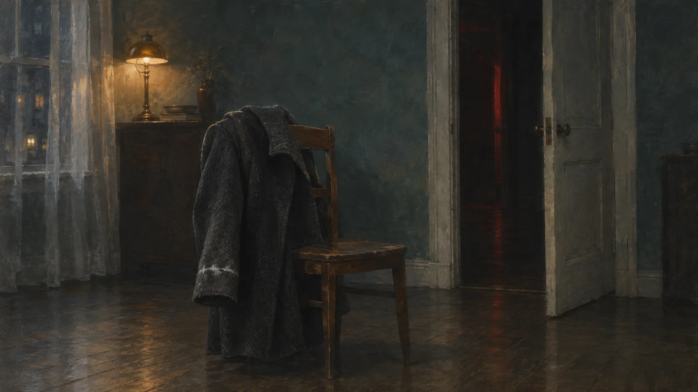
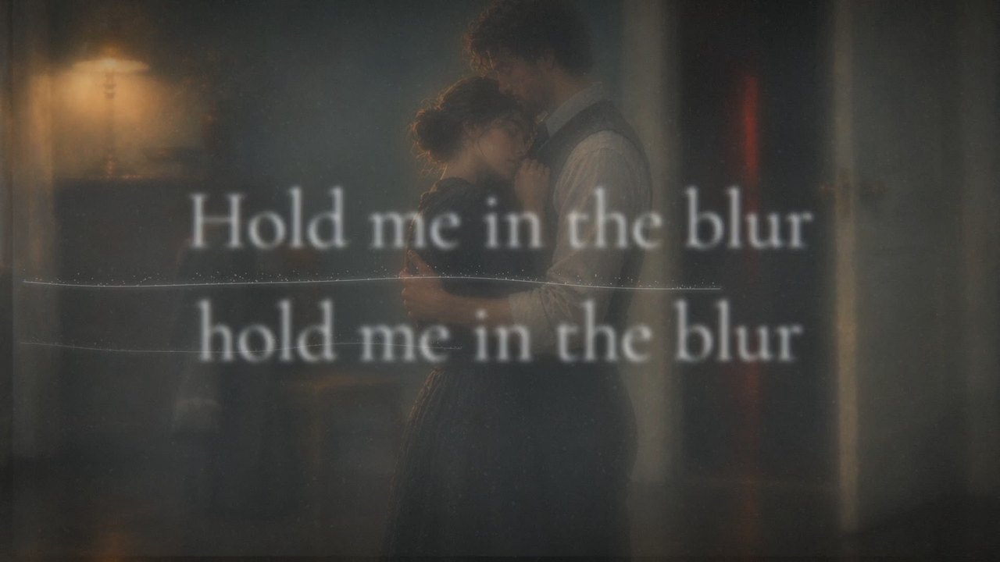

미리내맨
Tide Mark
썰물이 남긴 자국에 관한 노래
유리를 손가락으로 닦아 보세요
「Tide Mark」는 썰물이 지나간 자리에 남는 소금 선에 관한 노래입니다. 물은 빠져도 선은 남습니다. 떠난 사람이 남긴 것도 그렇습니다. 소매에 마른 소금 자국, 김 서린 거울에 쓴 이름, 의자에 걸어 둔 무거운 재킷.
노래 속 화자는 그 자국의 경계를 똑바로 보고 싶어 하지 않습니다. 흐릿한 채로 안겨 있으면, 아직 끝나지 않은 것처럼 느껴지니까요.
I don’t want to know
where the edges are
숨결 섞인 여성 보컬이 몽환적으로 문을 열고, 중반부터 남성 보컬이 들어와 감정이 터집니다. 앰비언트 신스 패드로 시작한 곡은 후렴에서 드럼과 일렉트릭 기타로 밀려오고, 브리지에서는 악기가 모두 빠져 겹친 목소리만 남았다가 마지막 후렴에서 다시 휘몰아칩니다. 끝은 잔잔한 피아노와 허밍입니다.
마지막 줄은 부탁입니다. 네가 떠난다 해도, 흉터 속에 머물러 줘. 지워지는 것과 남는 것 사이에서 화자는 남는 쪽을 고릅니다.
뮤직비디오 · 4분 4초

곧 공개합니다
화면의 가사는 영어 원문입니다. 한국어 가사는 유튜브 자막(CC)과 아래에서 볼 수 있습니다.
가사
Verse 1
I watched the tide mark썰물이 남긴 자국을 보았어
on your sleeve네 소매 위에서
White salt on the mirror거울 위의 하얀 소금
where you leave네가 떠나는 그 자리
Your name in the steam김 서린 유리 위 네 이름
gone too fast너무 빨리 사라졌어
Still on my tongue아직 내 혀끝에 남아 있어
like broken glass깨진 유리처럼
Pre-Chorus
If I lean in now지금 내가 기대면
I might fall through그대로 빠져 버릴지도 몰라
Past the frame of this room이 방의 틀을 지나
straight into you곧장 너에게로
Chorus
Hold me in the blur흐릿함 속에서 나를 안아 줘
hold me in the blur흐릿한 채로 안아 줘
I don't want to know알고 싶지 않아
where the edges are어디가 끝인지
Hold me in the blur흐릿함 속에서 나를 안아 줘
hold me in the blur흐릿한 채로 안아 줘
Your hands like weather날씨 같은 너의 손
on a bruised old star멍든 오래된 별 위에
Verse 2
Ash in the curtain커튼에 묻은 재
thin gold thread가느다란 금실
Your shadow in the doorway문간에 선 너의 그림자
half-lit red반쯤 붉게 물든
I keep your heavy jacket네 무거운 재킷을
on the chair의자 위에 그대로 둬
Like you might come back네가 돌아와
and find it there거기서 찾을 것만 같아서
Pre-Chorus
If I call your name네 이름을 부르면
it bends apart휘어져 갈라져
Like a moth beating날개를 치는 나방처럼
inside my heart내 가슴 안에서
Chorus
Hold me in the blur흐릿함 속에서 나를 안아 줘
hold me in the blur흐릿한 채로 안아 줘
I don't want to know알고 싶지 않아
where the edges are어디가 끝인지
Hold me in the blur흐릿함 속에서 나를 안아 줘
hold me in the blur흐릿한 채로 안아 줘
Your hands like weather날씨 같은 너의 손
on a bruised old star멍든 오래된 별 위에
Bridge
If the room turns blue방이 파랗게 물들면
let it turn물들게 둬
If the night won't end밤이 끝나지 않으면
let it burn타오르게 둬
I was made of dust나는 먼지로 지어졌고
you were rain너는 비였지
Now we're just the shape이제 우리는 그저
of a wound again다시 상처의 모양일 뿐
Final Chorus
Hold me in the blur흐릿함 속에서 나를 안아 줘
hold me in the blur흐릿한 채로 안아 줘
I don't want to know알고 싶지 않아
where the edges are어디가 끝인지
Hold me in the blur흐릿함 속에서 나를 안아 줘
hold me in the blur흐릿한 채로 안아 줘
Your hands like weather날씨 같은 너의 손
on a bruised old star멍든 오래된 별 위에
Hold me in the blur흐릿함 속에서 나를 안아 줘
hold me in the blur흐릿한 채로 안아 줘
Even if you go네가 떠난다 해도
stay in the scar흉터 속에 머물러 줘